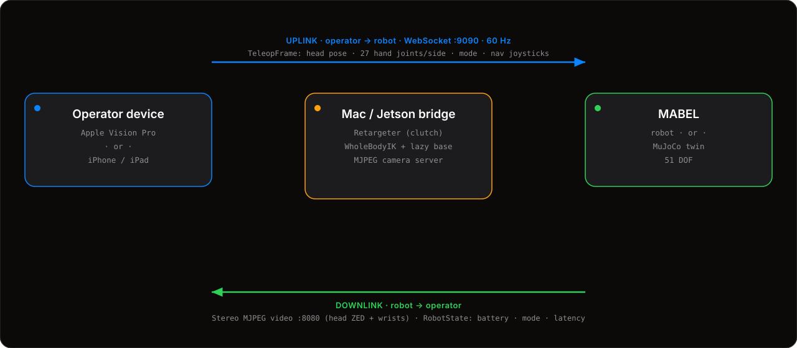

Two platforms, one robot. Today MABEL teleoperates from Apple Vision Pro — head and both hands at 60 Hz with stereo passthrough — and from iPhone — a pocket cockpit that drives, poses, plans, and runs policies. Both speak the same wire protocol.
Pick the one in your hand. The headset for immersive bimanual manipulation; the phone for quick drive, pose, and dispatch.
See MABEL's stereo feed wrapped around you; reach in and the arms follow. 27 hand joints, gaze, and head pose drive the whole body.
A pocket console: joystick driving, a live 3D-twin for whole-body posing, tap-to-go A* navigation, and a one-tap policy library.
The same cockpit, rebuilt for the web: joystick the swerve base and arms, switch the controller between firm (wrist / joint) and soft (gravity comp / compliance) modes, and watch a live status console. Press Connect to drive the real MuJoCo bridge — the 3D twin then mirrors the sim state exactly.
The device and the robot are two ends of one low-latency loop. Poses go up; video and state come back. Same protocol whether the far end is the real robot or the MuJoCo twin.

The app sends a TeleopFrame over a WebSocket (ws://<host>:9090):
a 4×4 head pose, a full 27-joint skeleton for each hand in the
ARKit frame, the active mode (Arms & Hands or Base Driving),
and — in driving mode — the nav-joystick axes. A reset message
re-homes the sim; ping/pong measures latency.
The bridge renders the robot's cameras off-screen and serves them as plain
MJPEG over HTTP (:8080) — head-left and head-right for the two
eyes, plus wrist thumbnails — pulled directly into the app's web view, no custom decoder. A
parallel RobotState message returns battery, mode, joint positions,
diagnostics, and round-trip latency.
Head + wrist cameras, joint states, actions, and the goal frame stream to disk in lockstep — ALOHA/ACT-compatible HDF5.
Your hand and gaze become a 6-DOF target; the whole-body controller works out how 51 joints honor it.
Point the device at the MuJoCo bridge or the robot — identical wire protocol, so you debug retargeting safely first.